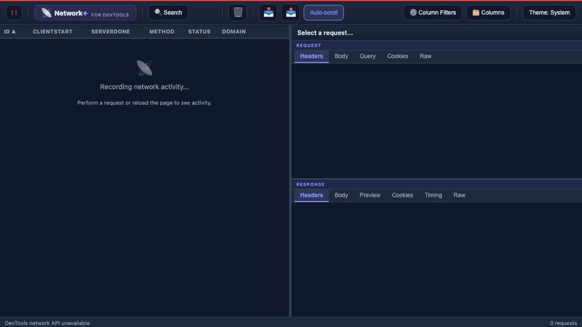

Edge DevTools extension
Network+
A network analysis extension for Microsoft Edge DevTools with multi-keyword search, column filters, request details, and HAR export.
Public evidence Clipboard and HAR exports sanitize credentials, cookies, query values, and bodies by default; full output requires one-time confirmation.
View evidence (opens in a new tab) ↗